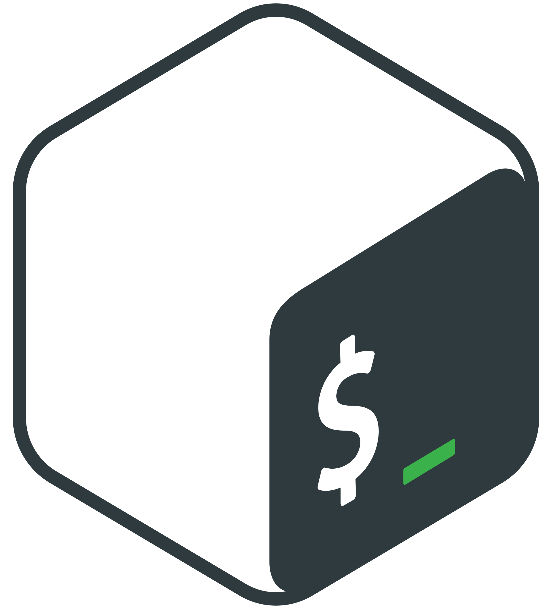
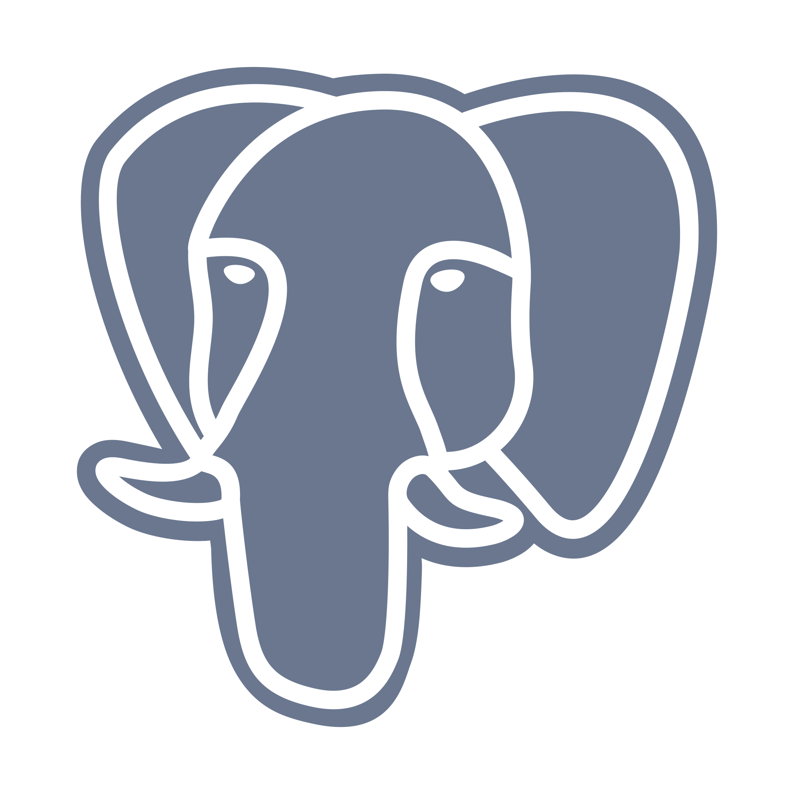
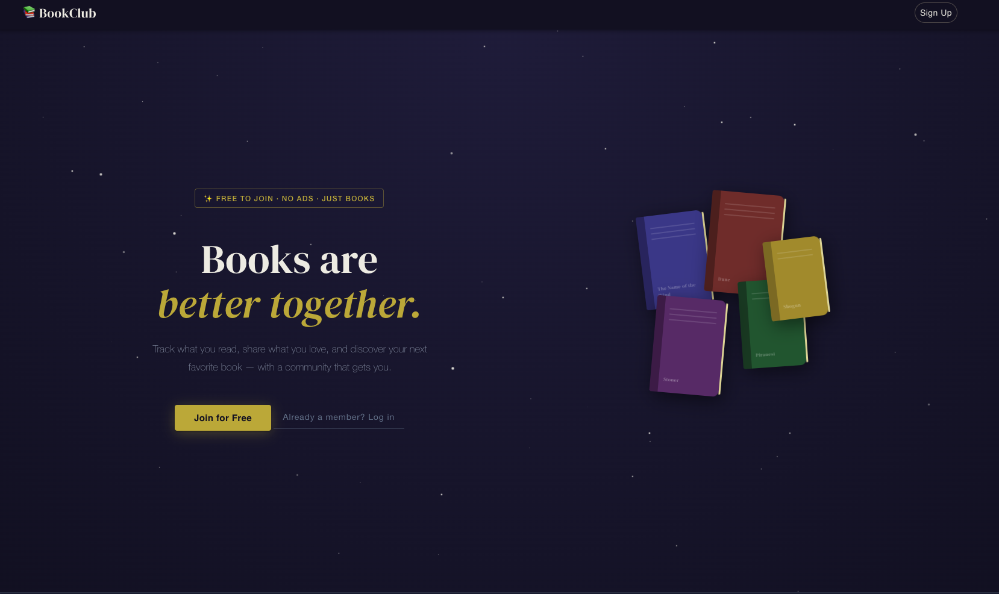

Samara Ruiz
Sandoval
Go · AWS · Azure · React — Reliable systems, DevOps practices & AI-powered products.
Passionate about clean architecture and tools that actually work at scale.
Who I Am
Miami-based backend engineer with a CS degree from FIU (3.7 GPA) and hands-on experience building production Go APIs, integrating Apple MDM systems, and working with Kafka/MSK on AWS.
I transitioned from support engineering into software development, which gave me an unusually strong instinct for how systems break in the real world. I care about clean architecture, maintainable code, and tools that actually work at scale.
Whether it's designing an API contract, wiring up a cloud-native service, or shipping a full-stack feature under pressure — I focus on outcomes that matter.
Technical Skills

Bash
PostgreSQLFeatured Projects

Full-stack web app for managing, sharing, and discussing books with per-chapter note-taking. Built with a clean architecture Go backend and a modern React frontend.
View LiveAI-powered log analysis feature built with AWS Bedrock. Shipped fast under pressure using cloud-native AI services — earned 3rd place in a competitive hackathon.
Work Experience
Education & Certifications
Let's Connect
I'm currently open to backend, cloud, or full-stack roles — remote or Miami-based. Whether it's a new product, a hard engineering problem, or a team that cares about quality, I'd love to hear from you.